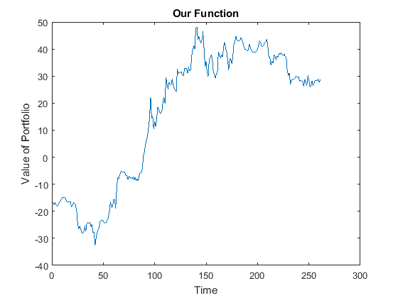
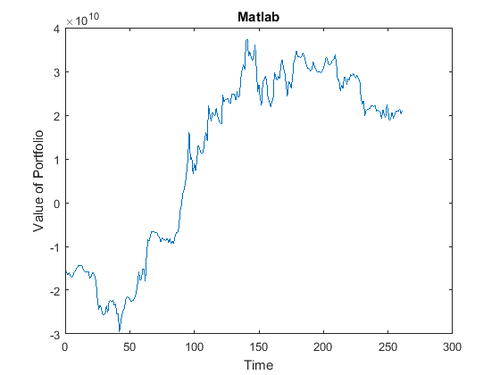
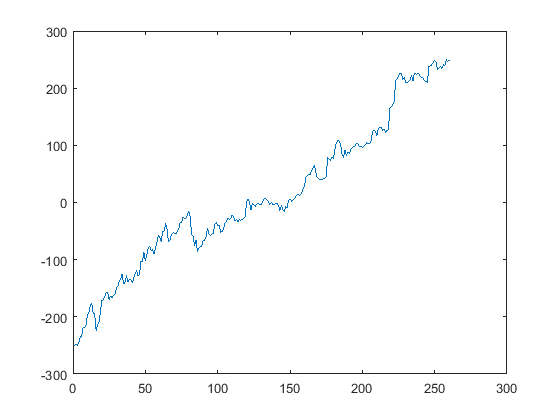

Contents
% (1) Main Setup (folder handling)
clear clc HomeDir = 'F:/Mean-Value-Opt/';%<<<<-----Put your home directory cd(strcat(HomeDir,'implementation')); % Load all "background" data [folders, dates, sectors] = dataLoc_retma(HomeDir); % Inputs RFR = [0.0365 0.0117 0.0143 0.0169 0.0100 ];%Bond Rates from Stats Canada
% (2) Select Data
date = dates(ceil(rand()*length(dates)));% select a random date sector = sectors(ceil(rand()*length(sectors)));% select a random sector [ Ret, CoRisk, stockNames, selData, data ] = data_selector( folders, date, sector ); clc fprintf('Loading %s Sector, from date %s-%s\n',... sector{:},date{:},num2str(str2num(date{:})+1));
Loading Utilities Sector, from date 2012-2013
(3.0) Test #0 Quadprog vs Pure Lagrange
clear mp n S M w WW clc mp = 0.05; n = length(Ret); S = CoRisk(1:n,1:n); M = Ret(1:n); % Matlab tic w = quadprog(2.*S,[],[],[],[ M ; ones(1,n)],[mp;1],... [],[],[],... optimoptions('quadprog','Algorithm','interior-point-convex','Display','off')); fprintf('Matlab Time: '); toc % Us tic WW = [ 2*S M' ones(n,1); M 0 0 ; ones(1,n) 0 0 ]\[ zeros(n,1); mp; 1 ]; fprintf('\nUs Time: '); toc % Comparison square_root_sum_of_error_squared = sqrt(sum((WW(1:end-2)-w).^2)./n)
Matlab Time: Elapsed time is 0.007771 seconds. Us Time: Elapsed time is 0.000254 seconds. square_root_sum_of_error_squared = 2.6239e-13
(3.1) Test Sharpe Optimization
clear n M S rfr WMp mLims clc n = 10; tP = 1:n; M = Ret(tP); S = CoRisk(tP,tP); rfr = RFR(1); mLims = 1E10; % Matlab tic p = Portfolio('AssetMean',M,'AssetCovar',S,'RiskFreeRate',rfr,'Budget',1,'LowerBound',-mLims,'UpperBound',mLims); WMp = estimateMaxSharpeRatio(p); Matlab_Sharpe = (M*WMp-rfr)/sqrt(WMp'*S*WMp) fprintf('Matlab Time: '); toc % Us tic [ sharpe, Wp, ~, ~ ] = optimizeSupreme( M, S, rfr ); Our_Sharpe = (M*Wp-rfr)/sqrt(Wp'*S*Wp) fprintf('\nUs Time: '); toc disp(WMp./Wp);
Matlab_Sharpe =
0.1640
Matlab Time: Elapsed time is 0.704627 seconds.
Our_Sharpe =
0.0831
Us Time: Elapsed time is 0.105043 seconds.
1.0e+08 *
5.1833
5.4998
6.1384
6.0368
6.0799
6.0158
6.2137
6.4974
6.1046
5.9567
Plots
figure('Name','Our Optimization'); plot(Wp'*selData(:,1:n)'); title('Our Function'); xlabel('Time'); ylabel('Value of Portfolio'); figure('Name','Matlab Optimization'); plot(WMp'*selData(:,1:n)'); xlabel('Time'); ylabel('Value of Portfolio'); title('Matlab'); 
(3.2) Compute Optimal Portfolio
clc
n = 20;
PortfolioLimit = 10;
tic
[ WpL, P, sharpe ] = optimizeSelect( Ret(1:n), CoRisk(1:n,1:n), RFR(1), PortfolioLimit )
toc
figure('Name',sprintf('Optimal %d Asset Portfolio', PortfolioLimit));
plot(WpL'*selData(:,P)');
WpL =
7.7807
-3.5085
7.5016
-5.1812
3.3386
5.4050
4.1486
-10.3480
-4.9925
-3.1442
P =
4 5 6 9 10 11 13 15 20 7
sharpe =
0.1301
Elapsed time is 3.526551 seconds.
